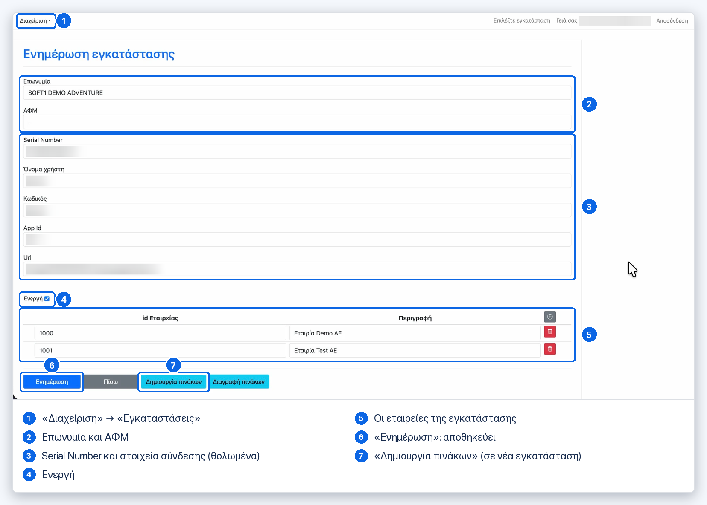
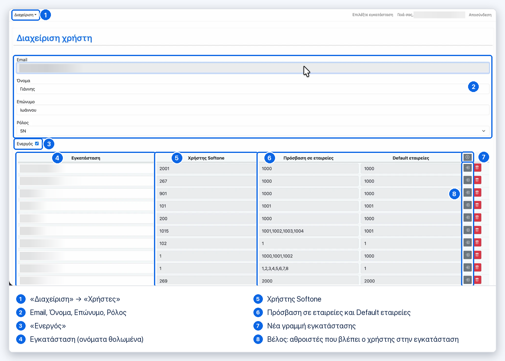
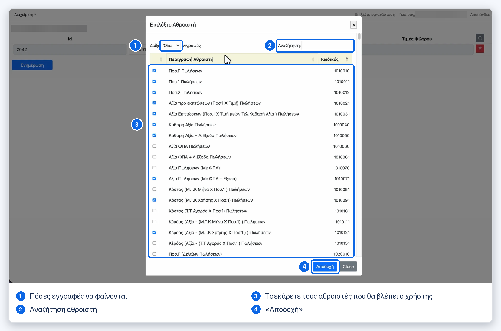
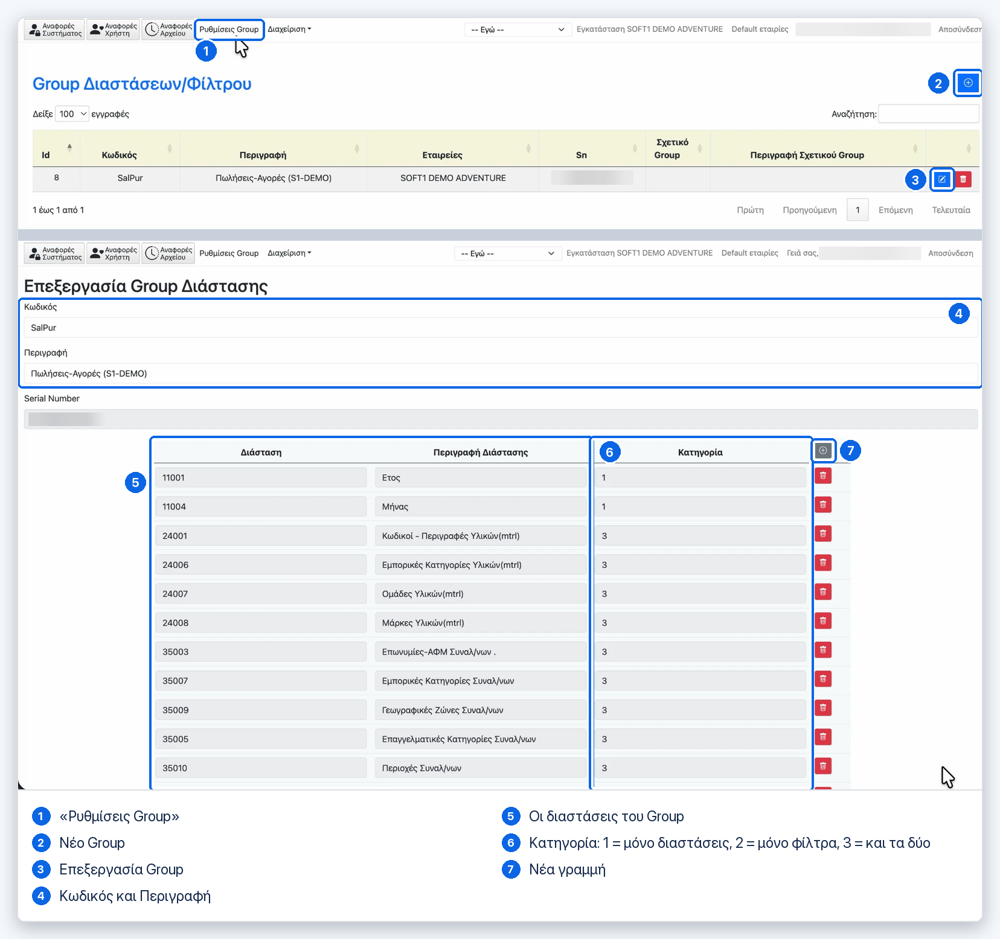
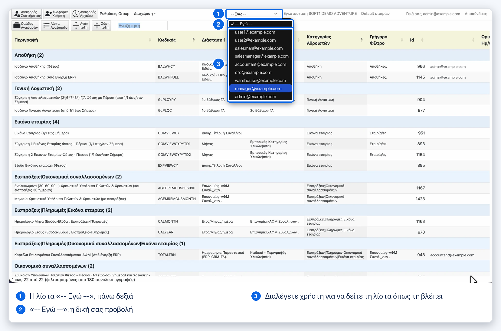

Οδηγός διαχειριστή
Για τον διαχειριστή του MARS: εγκαταστάσεις, χρήστες, δικαιώματα, αυτόματα φίλτρα (data fencing), Groups διαστάσεων, εταιρικοί αθροιστές, Αναφορές Συστήματος και ρυθμίσεις AI.
Τι κάνει#
Ο διαχειριστής (ρόλος SYSTEM ADMIN) βλέπει στο πάνω μενού το Διαχείριση με τις επιλογές Εγκαταστάσεις, Ρόλοι, Χρήστες, Διαστάσεις, Ημερομηνίες, Ρυθμίσεις AI, Agents, Workflow. Όταν έχει επιλέξει εγκατάσταση, βλέπει και τις Ρυθμίσεις Group.
1. Εγκαταστάσεις#
Κάθε εγκατάσταση είναι μία βάση SoftOne συνδεδεμένη με το MARS.
- Διαχείριση → Εγκαταστάσεις. Η λίστα δείχνει Εγκατάσταση, Serial Number, Ενεργό.
- Για νέα ή υπάρχουσα εγκατάσταση, συμπληρώστε: Επωνυμία, ΑΦΜ, Serial Number, Όνομα χρήστη, Κωδικός, App Id, Url, Ενεργή.
- Στον πίνακα από κάτω προσθέστε τις εταιρείες της εγκατάστασης (id Εταιρείας, Περιγραφή).
-
Πατήστε Αποθήκευση (ή Ενημέρωση).

Φόρμα εγκατάστασης (στοιχεία σύνδεσης θολωμένα) -
Σε νέα εγκατάσταση, πατήστε Δημιουργία πινάκων. Έτσι στήνονται στη βάση του πελάτη όσα χρειάζεται το MARS.
Τα στοιχεία σύνδεσης με το SoftOne τα δίνει ο πελάτης (ο υπεύθυνος μηχανογράφησής του).
2. Χρήστες#
- Διαχείριση → Χρήστες → νέος χρήστης: Email, Επίθετο, Όνομα, Κωδικός, Επαλήθευση κωδικού, Ρόλος. Πατήστε Αποθήκευση.
- Ανοίξτε τον χρήστη (Διαχείριση χρήστη). Εκεί αλλάζετε Όνομα, Επώνυμο, Ρόλος και Ενεργός. Το «Ενεργός» το βγάζετε για να κλείσετε έναν λογαριασμό χωρίς να τον σβήσετε.
- Στον πίνακα των εγκαταστάσεων, προσθέστε μια γραμμή για κάθε εγκατάσταση που θα βλέπει ο χρήστης: - Εγκατάσταση - Χρήστης Softone: ο αντίστοιχος χρήστης στο SoftOne. - Πρόσβαση σε εταιρείες: ποιες εταιρείες της εγκατάστασης βλέπει. - Default εταιρείες: ποιες είναι προεπιλεγμένες.
-
Πατήστε Ενημέρωση.

«Διαχείριση χρήστη» με τον πίνακα εγκαταστάσεων
3. Δικαιώματα αθροιστών και αυτόματα φίλτρα (data fencing)#
Εδώ ορίζετε τι νούμερα βλέπει ο καθένας. Αυτό κάνει ένα άτομο «πωλητή», «υπεύθυνο περιοχής» ή «διευθυντή».
- Στη Διαχείριση χρήστη, στη γραμμή της εγκατάστασης, πατήστε το εικονίδιο με το βέλος. Εκεί ορίζετε ποιους αθροιστές έχει δικαίωμα να βλέπει ο χρήστης σε αυτή την εγκατάσταση.
- Ανοίγει ο πίνακας με στήλες Αθροιστής, Φίλτρο, Τιμές Φίλτρου.
-
Σε κάθε γραμμή: - Πατήστε στο Αθροιστής και διαλέξτε από το Επιλέξτε Αθροιστή (μπορείτε να επιλέξετε πολλούς). Πατήστε Αποδοχή.

Παράθυρο «Επιλέξτε Αθροιστή»: οι αθροιστές που θα βλέπει ο χρήστης
- Αν ο χρήστης πρέπει να βλέπει τους αθροιστές αυτούς περιορισμένους, πατήστε στο Φίλτρο και διαλέξτε διάσταση (π.χ. πωλητής, περιοχή, αποθήκη).
- Πατήστε στο Τιμές Φίλτρου και τσεκάρετε τις τιμές (π.χ. οι τρεις πωλητές της ομάδας). Πατήστε Αποδοχή. 4. Πατήστε Ενημέρωση.
Τι πετυχαίνετε:
- Ο χρήστης βλέπει στη λίστα μόνο αναφορές των οποίων όλους τους αθροιστές έχει δικαίωμα να δει.
- Όταν διαλέγει αθροιστή, βλέπει μόνο τους επιτρεπόμενους.
- Όταν τρέχει αναφορά, το φίλτρο του αθροιστή μπαίνει αυτόματα στις στήλες αυτού του αθροιστή. Ο χρήστης δεν μπορεί να το αφαιρέσει.
Παραδείγματα:
| Άτομο | Αθροιστές | Φίλτρο | Τιμές |
|---|---|---|---|
| Πωλητής | Αθροιστές πωλήσεων | Πωλητής | Ο ίδιος |
| Υπεύθυνος ομάδας | Αθροιστές πωλήσεων | Πωλητής | Οι πωλητές της ομάδας |
| Υπεύθυνος καταστήματος | Αθροιστές πωλήσεων και αποθήκης | Αποθήκη | Η αποθήκη του καταστήματος |
| Διευθυντής πωλήσεων | Όλοι οι αθροιστές πωλήσεων | — | — |
Ο πωλητής είναι κανονικός χρήστης: του δίνετε συγκεκριμένους αθροιστές, με φίλτρα που τον περιορίζουν μόνο στις δικές του πωλήσεις.
4. Groups διαστάσεων και φίλτρων#
Τα Groups είναι οι σύντομες λίστες που εμφανίζονται στις Γρήγορες επιλογές (1η ΔΙΑΣΤΑΣΗ, 2η ΔΙΑΣΤΑΣΗ, ΦΙΛΤΡΟ). Έτσι ο χρήστης αλλάζει διάσταση με ένα κλικ, χωρίς να ψάχνει σε όλο τον κατάλογο.
- Ρυθμίσεις Group (στο πάνω μενού). Η λίστα Group Διαστάσεων/Φίλτρου δείχνει Id, Κωδικός, Περιγραφή, Εταιρείες, Sn, Σχετικό Group, Περιγραφή Σχετικού Group.
- Νέο ή επεξεργασία: συμπληρώστε Κωδικός και Περιγραφή. Το Serial Number φαίνεται για ενημέρωση.
- Στον πίνακα προσθέστε διαστάσεις (Διάσταση, Περιγραφή Διάστασης, Κατηγορία). Η Κατηγορία ορίζει πού εμφανίζεται η γραμμή: 1 = μόνο στο Group διαστάσεων, 2 = μόνο στο Group φίλτρων, 3 = και στα δύο.
-
Πατήστε Αποθήκευση.

Group Διάστασης: λίστα (πάνω) και επεξεργασία (κάτω) -
Στις ρυθμίσεις μιας αναφοράς, στην ενότητα Γρήγορες Επιλογές, ορίστε Group 1ης Διάστασης, Group 2ης Διάστασης και Group Φίλτρου.
5. Αναφορές Συστήματος#
Ο διαχειριστής είναι ο μόνος που αλλάζει τις Αναφορές Συστήματος. Ανοίγει τις ρυθμίσεις, κάνει τις αλλαγές και πατά Αποθήκευση αλλαγών. Οι αλλαγές ισχύουν για όλους, εκτός από αναφορές χρήστη που έχουν ήδη αντιγραφεί από αυτήν.
6. Διαστάσεις, περίοδοι και εταιρικοί αθροιστές#
- Διαχείριση → Διαστάσεις και Διαχείριση → Ημερομηνίες: βλέπετε τον κατάλογο και πατάτε Συγχρονισμός με Datalink Demo για να φέρετε την τελευταία έκδοση του κεντρικού καταλόγου.
- Εταιρικοί αθροιστές και διαστάσεις δημιουργούνται εκτός οθόνης, απευθείας στη βάση. Συνδέονται με τη συγκεκριμένη εγκατάσταση του πελάτη και δεν επηρεάζουν άλλες εγκαταστάσεις. Αφού δημιουργηθούν, δώστε τους στους χρήστες από τα δικαιώματα αθροιστών (ενότητα 3). Για νέο εταιρικό αθροιστή ή διάσταση στείλτε αίτημα στη Datalink.
7. Προβολή ως άλλος χρήστης#
Πάνω δεξιά, η λίστα -- Εγώ -- σας δείχνει τη λίστα αναφορών όπως τη βλέπει κάποιος άλλος χρήστης της εγκατάστασης. Χρήσιμο για να ελέγξετε τα δικαιώματα που ορίσατε.

8. Ρυθμίσεις AI#
- Ρυθμίσεις AI: οι οδηγίες (prompts) που καθοδηγούν τον βοηθό.
- Agents και Workflow: προχωρημένες ρυθμίσεις για το πώς συνεργάζονται τα βήματα του βοηθού. Αλλάξτε τες μόνο με οδηγίες της Datalink.
Συμβουλές και συχνά λάθη#
- Ο χρήστης δεν βλέπει καμία αναφορά: δεν έχει γραμμή εγκατάστασης ή δεν έχει δικαίωμα σε κανέναν αθροιστή.
- Ο χρήστης δεν βλέπει μια συγκεκριμένη αναφορά: του λείπει δικαίωμα σε έναν από τους αθροιστές της.
- Ελέγξτε πάντα με «-- Εγώ --» μετά από αλλαγή δικαιωμάτων.